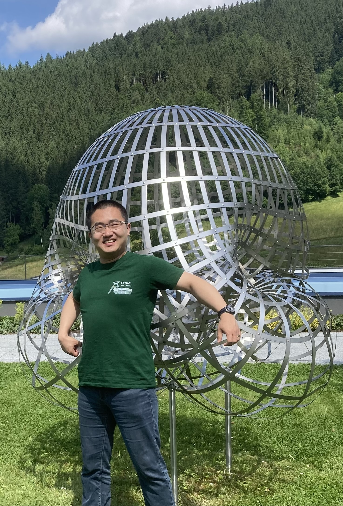

I'm a PhD student at Otto-von-Guericke Universität Magdeburg in Thomas Kahle's group. My research interest lies in the meeting of combinatorics with algebra and geometry, especially in matroid theory.
An axiomatization of matroids and oriented matroids as conditional independence models. SIAM Journal on Discrete Mathematics 38.2 (2024): 1526-1536. arXiv:2303.06668 .
The leading coefficient of Lascoux polynomials. Joint with Alessio Borzí, Harshit J. Motwani, Lorenzo Venturello, Martin Vodička. Discrete Mathematics 346.2 (2023): 113217. arXiv:2106.13104.
Matroids, Chow Rings and Log-Concavity. Master thesis at Freie Universität Berlin. pdf
Digraph Polynomials for Counting Cycles and Paths. arXiv:1712.00686.
Polynomials for Counting Cycles and Paths. Bachelor thesis at Hochschule Mittweida. pdf
Contact: xiangying.chen@ovgu.de